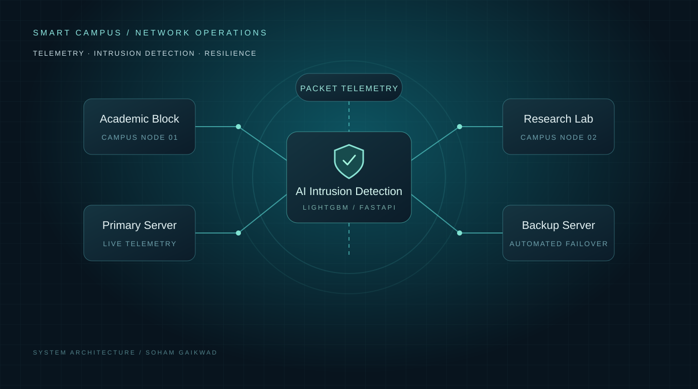

SOHAM
GAIKWAD.
B.Tech Computer Engineering
Student
Machine Learning & Deep Learning
Computer Vision, NLP & Agentic Systems
Featured Projects
[ 06 SELECTED WORKS ]01 FactoryMind AI
Digital Twin • Agentic AI • FastAPI
02 SatQuery AI
Computer Vision • Geospatial • PyTorch
03 AI Retinal Disease Predictor
Deep Learning • Grad-CAM • Medical AI
04 ScamShield
NLP Classification • AI Security • Scikit-Learn
05 AI Heart Disease Predictor
Machine Learning • Healthcare • FastAPI
06 AI-Enhanced Campus Network
Network Monitoring • LightGBM • FastAPI

Technical Skills &
Engineering Toolkit
My technical practice spans the full AI lifecycle: from exploratory data analysis and deep neural architecture training, to high-throughput inference APIs and modern reactive interfaces.
AI & Machine Learning
Designing, evaluating, and deploying statistical models and neural networks for prediction and inference.
Deep Neural Architectures
Developing convolutional neural networks, transfer learning flows, and visual explainability layers.
Python Data Ecosystem
Scientific computing, feature transformation, dimensional reduction, and statistical visualization.
Backend & Web Systems
Constructing high-performance asynchronous REST endpoints and interactive modern interfaces.
Databases & Vector Stores
Managing relational schemas, managed cloud instances, and high-dimensional semantic search indexes.
Engineering Workflows
Reproducible development with version control, containerization, and continuous integration.
Next-Gen Paradigms
Actively investigating agentic decision frameworks, tool orchestration, and multi-hop retrieval.
Applied Milestones
FactoryMind AI & SatQuery AI Platforms
Engineered Digital Twin simulation pipelines & geospatial satellite intelligence architectures
Explainable AI in Medical Diagnostics
Implemented CNN & Grad-CAM visual interpretability pipeline for retinal abnormality detection
ScamShield & Healthcare ML Inference Services
Deployed end-to-end NLP threat classification and heart disease prediction microservices